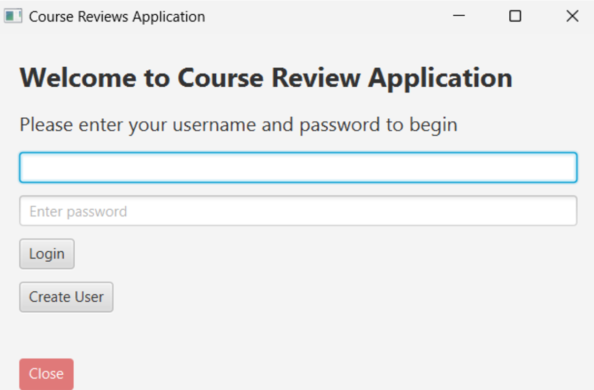
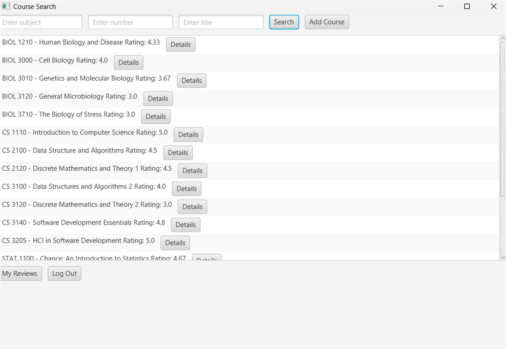

Summary

The application begins with a straightforward login and registration interface, designed using Java and JavaFX. Users can log in using a username and password or create a new account. Passwords must be between 8 and 20 characters, ensuring basic security parameters are met. The SQL database stores user credentials, but as this was designed as a challenge-type learning project and not intended for actual use, passwords are stored in plain text with no encryption. The 'Create User' feature provides a simple way for users to sign up and access the application's features, while the 'Close' button ensures ease of exiting the program.

Once logged in, users access the main interface, where they can browse a list of available courses. Built with JavaFX, the interface connects to the SQL database to dynamically fetch and display course details, including the course name, rating (calculated as an average of user-submitted ratings), and a 'Details' button for further information. Users can submit reviews for courses, with all reviews stored in the database. The reviews are displayed as a list, sorted by recency to ensure the most relevant feedback is shown first. Additionally, users have the ability to edit or delete their reviews as needed. Professors can add new courses directly through the interface, making this application suitable for educational use cases, though it primarily serves as a learning experience to explore database integration and user interface design.